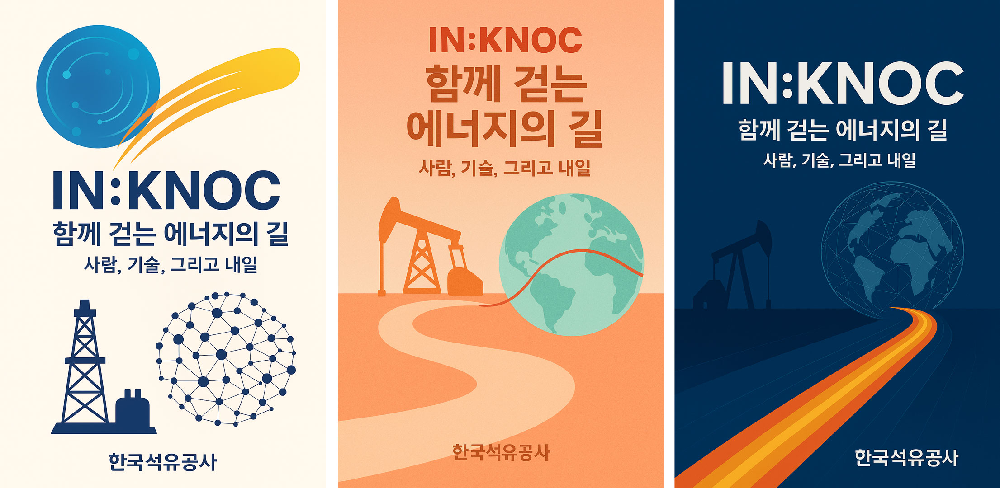

석유의 목소리를 빌려 자서전을 쓰고, 주제가를 만들었던 ‘AI+KNOC’의 실험이 또 한 번 확장됩니다. 이번에는 한국석유공사를 주제로 한 전시 기획입니다. 체험으로 기억되는 이야기 방식으로서의 전시를 구성하기 위해서는 명확한 테마와 그 테마를 이어주는 맥락이 필요합니다. 에너지 전환의 시대, 한국석유공사의 이야기를 어떻게 전달할 수 있을까요? 단순한 자료 나열이 아니라 사람과 기술, 역사를 아우르며 미래 에너지의 길을 이야기하는 전시를 AI와 함께 준비해봅니다.
이번 AI+KNOC는 ChatGPT와 함께했습니다.무언가를 시작할 때, 첫 단추가 중요하겠죠? 전시의 목적을 설정하기 위해 처음 AI에게 물었습니다. “우리가 왜 전시를 해야 할까?” AI는 몇 가지 가능성을 제시했습니다.
- 한국석유공사의 발자취를 기록하기 위해
- 에너지 전환 시대에 공사의 비전을 공유하기 위해
- 임직원에게 자긍심을 불어넣기 위해
- 대중과의 소통 창구를 마련하기 위해
이 네 가지 답변을 하나씩 생각해보며 목적의 방향을 정리해갈 수 있었습니다. 처음에는 ‘기록’이 눈에 들어왔고, 이어서 ‘공유’의 필요성에 공감했습니다. 임직원의 ‘자긍심’도 빼놓을 수 없었고, 대중과의 ‘소통’ 역시 놓치면 안된다는 생각이 이어졌습니다. 결국 이 전시는 단일한 목적을 갖기보다, 기록·공유·자긍심·소통이라는 네 갈래의 목적을 함께 엮어가는 여정이 되었습니다. 이렇게 전시 기획의 첫걸음을 내디뎠으니, 이제 본격적으로 전시의 주제와 콘셉트를 정해볼 차례입니다.
목적을 함께 정리한 뒤, 다음 질문을 던졌습니다. “그렇다면 이번
전시의 주제를 어디에 맞추면 좋을까?”
AI는 여러 갈래의 주제를 보여주었습니다.
한국석유공사의 역사와 기록에 방점을 둘 수도
있고, 수많은 사람들의 이야기와 현장을 중심에
둘 수도 있고, 더 나아가
에너지의 역사와 미래 비전을 담아낼 수도
있었습니다. 그 제안들을 살펴보며 큰 틀을 그려갔습니다.
- 단순히 과거만 보여주는 전시로는 부족하다.
- 현재를 통해 관람객이 공감할 수 있어야 한다.
- 동시에 미래를 향한 비전을 빠뜨릴 수 없다.
결국 전시의 큰 축은 “석유공사의 어제와 오늘, 그리고 내일”로 잡혀갔지만, 여전히 추상적이었습니다. AI에게 다시 물었습니다. “그렇다면 이 큰 틀 안에서 구체적인 꼭지는 어떻게 나누면 좋을까?” AI는 다섯 가지를 제안했습니다.
- 👥 사람에 주목하는 전시
- 📃 역사와 기억을 담는 전시
- 🌏 세계와 연결된 네트워크를 보여주는 전시
- 💻 기술과 성과를 드러내는 전시
- 🚀 마지막으로 미래를 이야기하는 전시
AI가 제안한 이 다섯 가지가 하나의 유기적인 이야기로 연결될 수 있을 것 같았습니다. 이제는 각 꼭지에 이름을 붙이는 작업이 남았습니다. AI와 함께 단어를 주고받으며 콘셉트를 다듬기 시작했고, 다음과 같은 다섯 개의 테마가 정해졌습니다. 처음에는 막연했던 주제가 제법 구체적인 콘셉트로 정리되어가고 있었습니다.
-
🧑 IN:People ? 사람의 얼굴
단순한 인물 소개가 아닌, 얼굴을 통한 정체성 표현 -
💭 IN:History ? 기억의 유전
시간의 축적, 기억을 담은 역사의 의미 -
🌐 IN:Network ? 검은 지도
세계로 뻗은 석유의 연결망 -
🔇 IN:Technology ? 소리 없는 기술
조용하지만 강력하게 축적된 기술의 의미 -
🌠 IN:Future ? 미래의 에너지
단순한 예측이 아닌, 관람객과 함께 상상하고 이야기하는 장
다섯 개의 테마가 정리된 뒤, 다시 AI에게 물었습니다. “이제 전시의 이야기를 어떤 흐름으로 풀어가는 게 좋을까? 시간순으로 보여주는 게 좋을까, 주제별로 묶는 게 좋을까, 경험 중심으로 배치하는 게 좋을까?” AI는 각각의 장단점을 설명해주었습니다.
-
시간순 전개
설립부터 현재, 미래까지 이어지는 직선적 서사. 관람객이 전체 맥락을 이해하기 쉽다. -
주제별 전개
테마별로 독립적 감상을 할 수 있다. 단, 이야기의 흐름이 단절될 수 있다. -
경험 중심 전개
관람객이 경험을 통해 흥미를 느낄 수 있다. 단, 이야기의 흐름이 단절될 수 있다.
한국석유공사의 발자취를 보여주면서도, 관람객이 앞으로의 비전을 체감하게 하려면 어떤 방식이 좋을지, 각 전개 방식을 놓고 비교하며 고민했습니다. 결국, 시간의 흐름을 기본 축으로 삼되, 각 테마를 경험적으로 엮는 방식이 좋겠다는 결론에 이르렀고, AI도 고개를 끄덕였습니다.
-
과거
설립과 성장, 해외 자원 개발의 발자취. 이 부분은 기록 자료와 사진, 모형 전시를 통해 무게감을 담는다. -
현재
사업 현황과 기술적 성과, 그리고 사람들의 이야기. 인터뷰 영상과 인터랙티브 콘텐츠를 활용해 생동감을 더한다. -
미래
에너지 전환 시대 속 KNOC의 비전과 도전. 관람객이 직접 의견을 남기거나 상상할 수 있는 참여형 공간으로 구성한다.
이렇게 정리하니, 전시는 단순히 과거에서 미래로 흘러가는 연대기적 서사를 넘어서, 관람객이 체험으로 여정을 따라가는 구조가 되었습니다. 마치 시간의 강을 건너가듯, 과거를 밟고 현재를 지나 미래로 나아가게 되는 여정. AI와의 대화를 통해 막연했던 구성 방식이 맥락 있는 스토리라인으로 구체화된 순간이었습니다.
스토리라인을 어느 정도 잡고 나니, 다음 질문이 자연스럽게
떠올랐습니다. “이 이야기를 채울 수 있는 재료들은 무엇일까?”
AI는 먼저 전시의 기본을 짚었습니다. “전시는 결국 콘텐츠로
완성됩니다. 기록, 사람, 사물, 그리고 디지털 자료가 필요하죠.”
수많은 기록 자료가 떠올랐습니다. 사보, 연혁 문서, 해외 프로젝트
사진 같은 것들. 하지만 곧 한계가 보였습니다. 단순히 종이 위의
기록만으로는 관람객의 감각을 자극하기 어렵다는 점이었습니다.
그래서 AI에게 다시 물었습니다. “그렇다면 기록을 넘어, 관람객이
직접 체험하듯 느낄 수 있는 것은 뭐가 있을까?”
AI는 몇 가지를 제안했습니다.
-
구술 자료
현장 직원, 해외 파견 인력의 인터뷰 영상. 사람의 목소리가 주는 힘. -
물리적 오브제
장비 모형, 석유·암석 샘플. 만져보고 가까이에서 보는 경험. -
멀티미디어 자료
드론 촬영 현장 영상, 세계 지도 기반 인터랙티브 화면, 데이터 시각화 인포그래픽.
이 제안들을 보며 점점 그림이 선명해졌습니다. 전시가 단순히 과거의
기록을 쌓아놓는 자리가 아니라,
사람의 목소리와 사물의 질감, 그리고 기술로 재해석된 이미지들이
뒤섞이는 현장이 될 수 있다는 확신이 생겼습니다.
마지막으로 AI는 이렇게 말했습니다.
“기록과 데이터도 중요하지만, 예술적 재해석을 더한다면
전시는 단순한 정보 전달을 넘어, 감각을 일깨우는 체험이 될 수
있습니다.”
AI의 답변에 고개를 끄덕일 수밖에 없었습니다. 그렇습니다. 이번
전시의 핵심은 바로 그 지점에 있습니다.
데이터와 기록을 감각적 경험으로 번역하는 작업. 그 과정을 통해 관람객은 단순히 ‘아는 것’을 넘어, ‘기억하는
것’을 가져가게 될 것입니다.
콘텐츠를 정리한 뒤, 저는 다시 AI에게 물었습니다. “그렇다면 이
전시는 어떤 공간에서, 어떤 형식으로 보여주는 것이 좋을까?”
AI는 잠시 멈추었다가, 현실적인 제약부터 짚었습니다. “이번 전시는
특정한 전시관이나 상설 공간이 정해져 있지 않죠. 그렇다면 공간의
제약을 피하지 말고, 오히려 그것을 콘셉트로 삼는 게 어떨까요?”
정해진 공간이 없는 것은 한계이면서 동시에 가능성이었습니다.
그렇다면 답은 하나, 이동할 수 있는 전시였습니다.
AI는 구체적인 그림을 설명하기 시작했습니다.
-
모듈형 구조
접이식 패널, 독립형 전시 박스, 이동식 미디어월. 공간에 따라 자유롭게 배치하고 철수할 수 있다. -
다양한 장소 적용
사내 로비, 공공 전시관, 국제행사 팝업 공간 등 어디서든 설치 가능하다. -
체험 요소
터치스크린 세계지도, 관람객 메시지 보드, VR·AR 체험존 같은 인터랙티브 장치.
AI의 그림을 들여다보고 있으니, 한국석유공사 사옥 로비 한쪽에
설치된 모듈, 해외 전시회 부스 안에서 빛나는 패널, 지역 주민을 위한
팝업 전시 공간까지. 전시가 머무는 장소마다 모양을 바꾸며, 관람객과
만나는 장면이 그려졌습니다.
마지막으로 AI는 덧붙였습니다. “이동형 모듈 전시의 장점은 유연성뿐
아니라, 이야기의 확장성에도 있습니다. 같은
콘텐츠라도 공간에 따라 다르게 배열되면서, 전시는 매번 새로운
해석을 만들어낼 수 있죠.” 이번 전시는 한 번 열리고 끝나는 행사가
아니라, 이동하며, 변주되며, 확장되는 전시가
될 것이라는 기대가 생겼습니다. 바로 그 점이 이번 기획의 가장
중요한 형식적 실험이자, 새로운 전시 방식의 제안이기도 했습니다.
다섯 개의 테마가 자리를 잡고, 공간의 형식까지 윤곽이 드러난 뒤에도
한 가지가 남아 있었습니다. 바로 전시의 이름이었습니다. AI에게
물었습니다. “이제 제목을 지어야겠지? 단순히 ‘한국석유공사
전시’라고 하면 너무 밋밋할 것 같은데, 어떻게 하면 좋을까?”
AI는 몇 가지 방향을 제시했습니다.
-
설명형
〈한국석유공사의 어제와 오늘, 그리고 내일〉 -
상징형
〈땅속에서 미래로〉, 〈자원에서 에너지로〉 -
압축형
짧고 간결한 키워드 중심
설명형은 조금 길다고 느꼈고, 상징형은 멋지지만 제목만으로는 KNOC와
바로 연결되지 않을 수 있다는 점이 걸렸습니다. 그러던 중 문득
떠오른 것이 있었습니다. 다섯 개의 테마 이름을 하나씩 다시 떠올려
보니, 모두 “IN:”으로 시작하고 있었습니다. IN:People, IN:History,
IN:Network, IN:Technology, IN:Future. 이 접두어가 단순한 장식이
아니라, 전시 전체를 관통하는 하나의 리듬이라는 생각이 들었습니다.
AI에게 다시 물었습니다. “이 ‘IN’을 전체 전시 제목으로 확장할 수는
없을까?”
AI는 곧바로 대답했습니다. “그렇다면 〈IN:KNOC〉이 자연스럽습니다.
KNOC 안으로 들어간다는 의미이자, KNOC의 내부를 탐색하는
전시라는 메시지를
담을 수 있죠.”
다섯 개의 테마가 이미 그렇게 말하고 있었고, 전체 타이틀 역시
거기에서 태어나는 것이 가장 자연스럽다는 것을 AI가 말하고
있었습니다. 그렇게 정해진 전시의 제목은
〈IN:KNOC ? 함께 걷는 에너지의 길〉로
정리되었습니다. “땅속에서 미래로”, “자원에서 에너지로”, “사람,
기술, 그리고 내일” 등 AI는 전시의 부제로 어울리는 키워드까지
제안해주었습니다.
전시 기획이 점차 구체적인 뼈대를 갖춰갈수록, 다음 고민은
‘관람객에게 전시의 얼굴을 어떻게 보여줄 것인가?’였습니다. 아무리
좋은 기획도 관람객의 눈길을 끌고 손에 잡히는 순간이 없다면
반쪽짜리가 되기 쉽습니다. 그래서 다시 한번 AI에게 물었습니다.
“전시를 알릴 수 있는 홍보물을 만든다면, 어디서부터 시작하는 게
좋을까?”
AI는 세 가지를 제안했습니다. 첫째, 가장 직관적인 포스터. 둘째,
관람객이 손에 쥐고 돌아갈 수 있는 리플렛. 셋째, 현장 경험을
확장해줄 디지털 연계물. 저는 그중에서도 포스터에 주목했습니다. 한
장의 이미지와 몇 줄의 문구로 전시의 핵심을 압축해 전달할 수 있기
때문입니다.
전시 타이틀 <IN:KNOC>을 중심에 세우고, 부제를 통해 주제를
보완하는 포스터를 부탁했고, AI는 미래지향적 이미지를 살릴 수 있는
원형 패턴과 에너지 흐름 모티프를 제안했습니다. 석유 시추 장비의
실루엣, 세계 지도를 형상화한 네트워크, 빛으로 번져 나가는 에너지의
궤적이 서로 겹치면서 하나의 포스터로 만들어졌습니다. AI가 완성한
전시 포스터 디자인, 여러분이 보시기엔 어떠신가요?

막연했던 전시 기획이 이제는 이동형 모듈 전시라는 형식과 다섯 개의
테마, 그리고 포스터까지 구체적인 결과물로 확장되었습니다. AI와의
대화를 통해 목적부터 명확히 세우고, 주제를 도출하며, 형식을
찾아가는 과정 자체가 이번 프로젝트의 핵심이었습니다. 이번 시도를
통해 AI는 기획 파트너로서, 때로는 질문을 던지고 때로는 새로운
제안을 하며 다양한 가능성을 열어주었습니다. 여러분은 이번 과정 중
어떤 부분이 가장 인상 깊으셨나요?
AI와 <석유사랑>이 함께 만들어가는 이 실험은, 현실과 상상의
경계를 허물며 전시 문화의 또 다른 가능성을 제시합니다. 다음에는
AI와 함께 또 어떤 상상과 실험을 이어갈 수 있을까요? AI+KNOC의
여정은 계속됩니다. AI와 함께 새로운 이야기를 만들고 창의적인
실험을 펼쳐가는 AI+KNOC의 여정을 앞으로도 기대해 주세요!